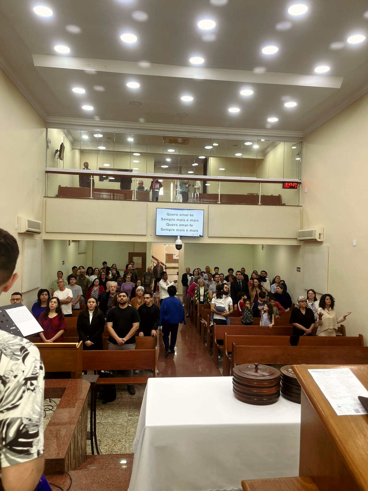
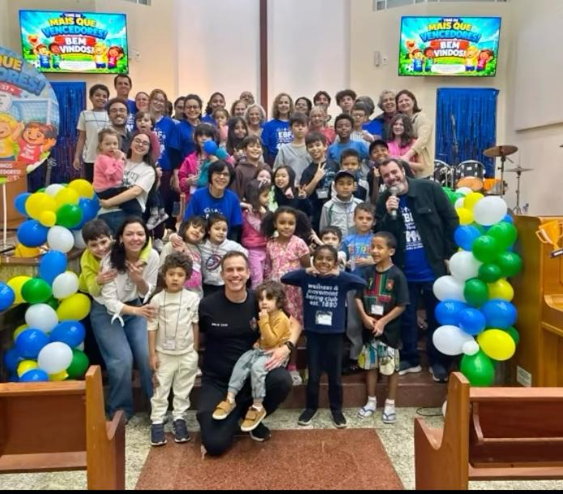
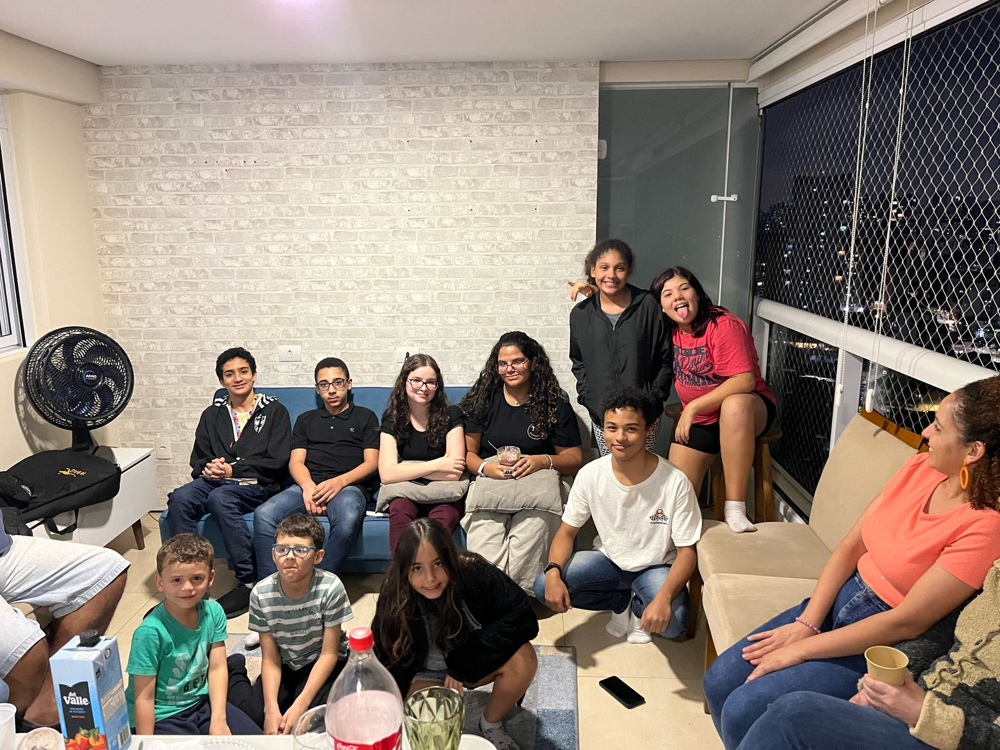
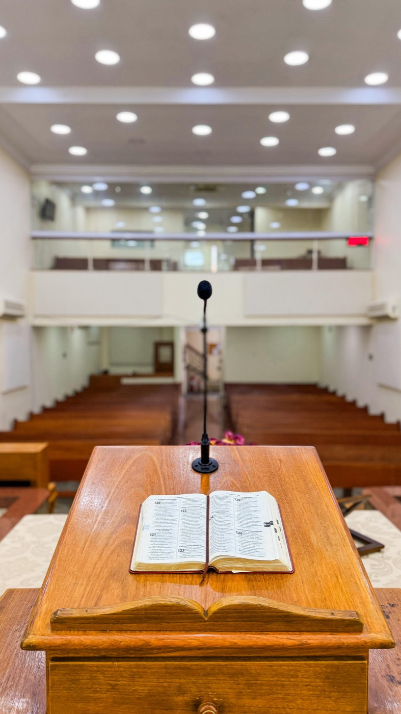

Culto e palavra
Encontros semanais com adoração, ensino bíblico e comunhão.
Bem-vindo à nossa comunidade
Um espaço de fé, acolhimento e serviço para quem deseja crescer em comunhão, participar das programações e conhecer melhor a vida da igreja.
Encontros semanais com adoração, ensino bíblico e comunhão.
Uma comunidade presente para orar, aconselhar e acompanhar.
Departamentos e projetos que colocam a fé em movimento.

Departamentos
A Sociedade Auxiliadora Feminina é o ministério oficial das mulheres na IPB, criado para organizar a atuação feminina na evangelização, oração e assistência social.

União de Crianças Presbiterianas une crianças de 6 a 11 anos, ajudando-as a crescer espiritual, moral, intelectual e socialmente.

União Presbiteriana de Adolescentes, grupo para garotos e garotas de 12 a 18 anos, com comunhão, Bíblia, crescimento na fé, reuniões e gincanas.
União de Mocidade Presbiteriana reúne jovens entre 18 e 35 anos para cuidado, comunhão e serviço na igreja local.
Fortalecimento matrimonial, edificação de famílias, estudos, encontros especiais e aconselhamento pastoral.
LGPD
Esta área pode apresentar a política de privacidade, a finalidade de uso dos dados e o canal de contato para solicitações relacionadas à proteção de dados. Qualquer pedido ou dúvida entrar em contato.
Programações

Liderança
Responsável pela direção pastoral, ensino, cuidado espiritual e acompanhamento da igreja.
André Silvério é doutorando em Ministério pelo Reformed Theological Seminary/CPAJ. É mestre em Teologia Pastoral pelo CPAJ, com concentração em Pregação Expositiva.
É bacharel em Teologia pela Universidade Presbiteriana Mackenzie e pelo Seminário Presbiteriano Rev. José Manoel da Conceição. Também é professor de pregação reformada expositiva no Seminário Teológico Presbiteriano Rev. José Manoel da Conceição (JMC), em São Paulo.
É pastor da Igreja Presbiteriana do Brasil há 21 anos. Atualmente, pastoreia a Igreja Presbiteriana do Jardim da Glória.
É casado com Michele há 21 anos e pai de três filhos. Entre suas grandes paixões estão o ensino da pregação expositiva e o discipulado de casais e famílias.
Ele tem viajado para vários lugares do Brasil pregando e palestrando nessas áreas.
Dízimos e ofertas
Você pode contribuir usando os dados bancários da igreja ou a chave Pix abaixo. Confira os dados antes de finalizar a transferência.
Aponte a câmera do celular para contribuir por Pix.
Contato